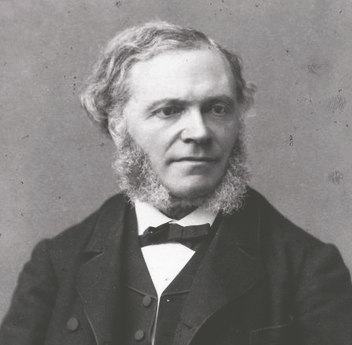

César Franck
1822 - 1890
A composer and organist who was the chief figure in a movement to give French music an emotional engagement
César-Auguste Jean-Guillaume Hubert Franck (French pronunciation: [sezaʁ oɡyst ʒɑ̃ ɡijom ybɛʁ fʁɑ̃k]; 10 December 1822 –
8 November 1890) was a French Romantic composer, pianist, organist, and music teacher born in modern-day Belgium.

César Franck, photograph by Pierre Petit.
The following list is a time line of Franck
- 1822 - He was born in Liège (which at the time of his birth was part of the United Kingdom of the Netherlands).
- 1834 - César-Auguste gave his first concerts, one before Leopold I of the newly formed Kingdom of Belgium.
- 1835 - His father resolved that the time had come for wider audiences, and brought César-Auguste and his younger brother Joseph to Paris, to study privately.
- 1837 - Young Franck and his brother entered the Conservatoire, César-Auguste continuing his piano studies under Zimmerman and beginning composition with Aimé Leborn.
- 1841 - He added organ studies with François Benoist, which included both performance and improvisation, taking second prize.
- 1842 - The young Franck compelled the latter to leave the Conservatoire and accompany Nicolas-Joseph.
- 1843 - In 1843, Franck began work on his first non-chamber work, the oratorio Ruth.
- 1847 - Franck had wanted an organist's position, not least because it provided a steady income. He now had occasion to match his Roman Catholic devotion with learning the skills needed for accompanying public worship.
- 1858 - He became organist and maître de chapelle at the newly consecrated Sainte-Clotilde.
- 1862 - His increasing reputation as both performer and improviser continued to make Franck much in demand for inaugural or dedicatory recitals of new or rebuilt Cavaillé-Coll organs.
- 1869 - Franck continued to write compositions for choir in this period, but most were never published.
- 1872 - Franck's reputation was now widespread enough, through his fame as performer, his membership in the Société, and his smaller but devoted group of students, that when Benoist retired as professor of organ at the reopening of the Paris Conservatoire in 1872, Franck was proposed as successor.
- 1886 - In 1886 Franck composed the Violin Sonata as a wedding gift for the Belgian violinist Eugène Ysaÿe.
- 1888 - The dissension between Franck's family and his circle of students reached a new height when Franck published Psyché, D minor.
- 1888 - Franck successfully tried his hand again at another opera, Ghiselle.
- 1890 - Franck started the new term at the Conservatoire in October, but caught a cold mid-month.
This turned into pleurisy complicated by pericarditis. After that, his condition rapidly worsened and he died on 8 November.
Read more about César Franck on
Wikipedia.